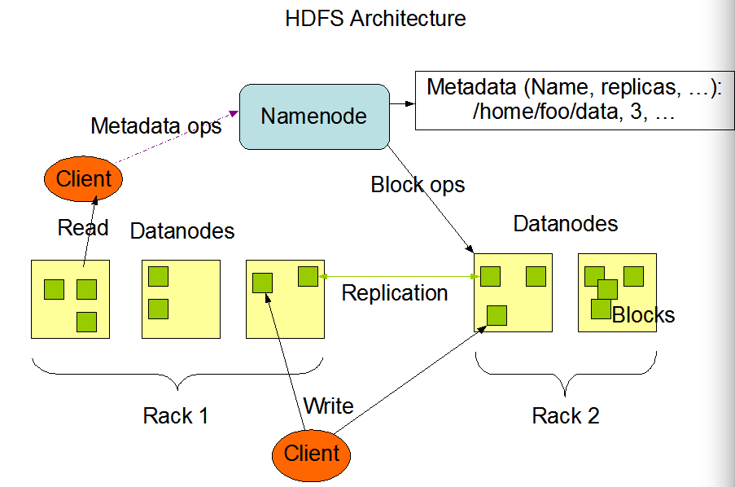

A distributed file system written in Java on which MapReduce programs can be performed.
HDFS is a distributed file system written Java that is designed to run on commodity hardware. It is similar to other distributed file systems, but it places an emphasis on being highly fault-tolerant and provide streaming access to data
HDFS has a master/slave architecture. A typical HDFS cluster has a single system that servers as a NameNode and multiple systems that serve as DataNodes
The NameNode serves as the master machine for the file system's namespace. The NameNode contains information about all the DataNodes: the files they have, their operating status, the set of files that exist in the file system, etc.
Files in a typical HDFS cluster are highly replicated to ensure fault recovery. When a client sends a file to the NameNode for storage the NameNode breaks the file into groups of data called blocks. It then distributes the blocks across DataNodes based on various factors (disk space, speed, closeness to related data, etc.). The NameNode also performs block replication, when new blocks are stored or systems fail the NameNode will replicate the blocks on one DataNode and distribute the replicas across the file system.
The DataNodes are the slave systems, they simply store blocks of data and are unaware of the blocks they contain. Periodically they report their status (if healthy) to the NameNode, if a DataNode dies it is lost to HDFS.
Once you have Hadoop installed you can make command line calls to the file system
$ hdfs dfs -ls /